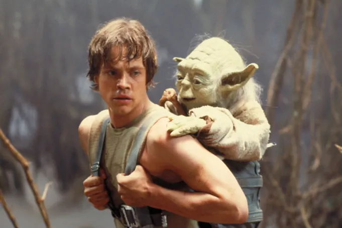
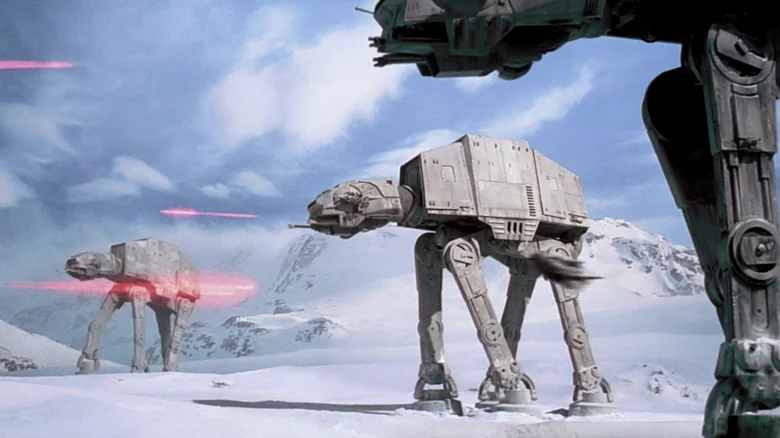
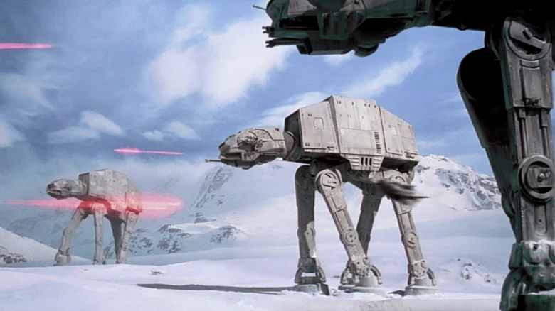

Star wars: The Empire Strikes Back and Star Wars: Return of the Jedi are cult classics and have greatly influence modern media. Both films explore themes of heroism, sacrifice, and the battle between good and evil. 40 years later, they still hold a special place in the hearts of fans around the world. Cinematically, both films are flawless arer if you ever get the chance, see them in person on 35mm film!
Daniel Sullivan10/22/2025

 
